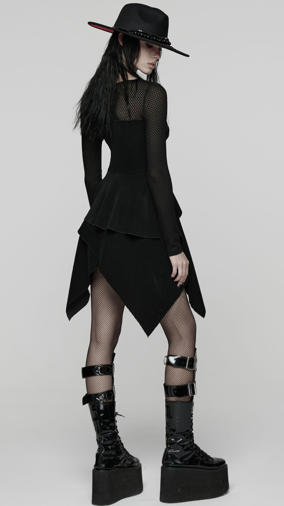
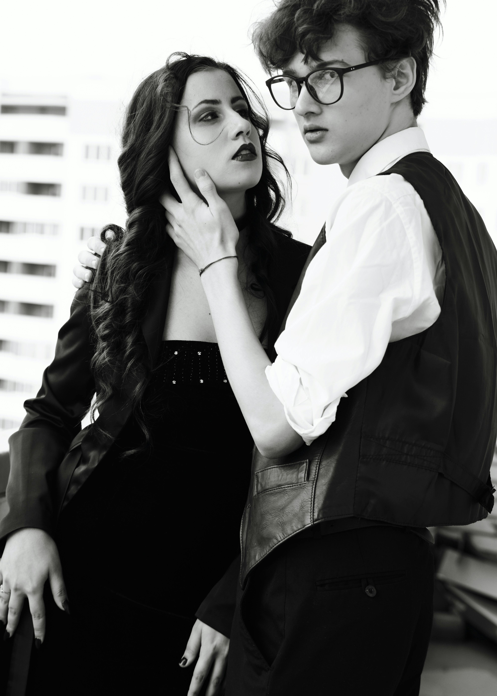

Yo Yo Yo Modelling?
Modeling is a profession that involves showcasing fashion, products, or concepts through visual presentation. Models use their appearance, posture, and expressions to communicate a brand’s message effectively. It is a field that combines creativity, aesthetics, and professionalism.
There are many types of modeling, including fashion, commercial, runway, and promotional work. Each type requires different skills and looks, from high-fashion editorial shoots to advertising campaigns for everyday products. Flexibility and adaptability are key traits for a successful model.
Beyond physical appearance, modeling demands discipline, confidence, and strong communication skills. Models often work long hours, attend castings, and collaborate with photographers, designers, and stylists to bring creative visions to life. Professionalism and reliability are just as important as looks.
With the rise of social media, modeling opportunities have expanded beyond traditional agencies. Influencers and content creators can now build their own brands and reach audiences directly. Modeling is not just about beauty—it’s about creativity, presence, and the ability to tell a story through visuals.
Jaueizk
Modelling in Melbourne
Melbourne’s modelling industry has grown into a vibrant and diverse ecosystem, supported by a strong local fashion scene and a culturally-rich population. The city’s established modelling agencies, such as AEFM, represent a wide range of talent spanning commercial, fitness, plus‑size, and editorial sectors. This versatility makes Melbourne attractive not just for high-fashion campaigns, but also for lifestyle and brand-oriented work.
The commercial modelling market in Melbourne benefits significantly from the city’s dynamic retail sector. With major shopping precincts and brands regularly launching campaigns, there is steady demand for models in catalogues, advertisements, and promotional events. Furthermore, Melbourne’s reputation as an “events capital” — with trade shows, sports events, and large-scale corporate activations — creates frequent opportunities for event and promotional models.
Fashion‑editorial and runway work also feature prominently in Melbourne’s modelling landscape. Events like Melbourne Fashion Week and other designer showcases provide vital platforms for runway and editorial models. These high-profile occasions not only generate visibility for models but also help them network with photographers, stylists, and international agencies — helping them build a portfolio with prestige and reach.
Jack and Hillton.
Modelling Salaries in Melbourne
In Melbourne, the pay for models varies widely depending on experience, agency representation, and the nature of the job. Entry-level models doing commercial work—such as local catalogues, lookbooks, or lifestyle shoots—can expect to earn modest rates, often ranging from AUD 150 to AUD 300 for a half-day shoot.
For more established models or those in fashion‐editorial and runway work, earnings can rise substantially. Experienced models might command around AUD 400 to AUD 1,200 (or more) per day for runway shows, fashion editorials, and commercial campaigns.
Beyond traditional modelling gigs, some Melbourne models earn income from alternative modelling roles such as influencer work, brand ambassadorships, or fit‑modelling. In these roles, pay can be more variable.